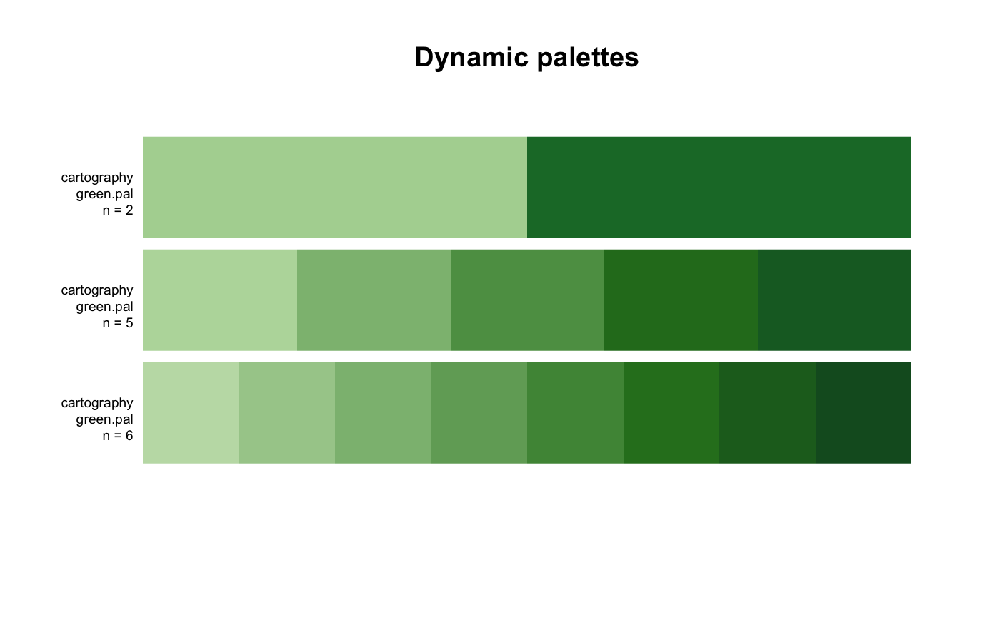
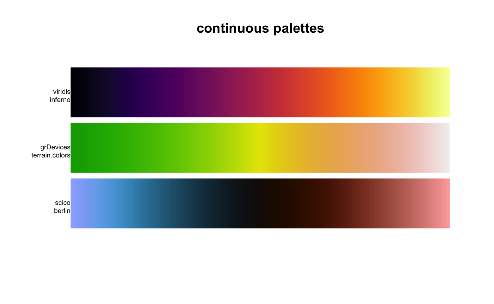

The goal of paletteer is to be a comprehensive collection of color palettes in R using a common interface. Think of it as the “caret of palettes”.
Installation
You can install the released version of paletteer from CRAN with:
If you want the development version instead then install directly from GitHub:
Palettes
The palettes are divided into 2 groups; discrete and continuous. For discrete palette you have the choice between the fixed width palettes and dynamic palettes. Most common of the two are the fixed width palettes which have a set amount of colors which doesn’t change when the number of colors requested vary like the following palettes:

on the other hand we have the dynamic palettes where the colors of the palette depend on the number of colors you need like the green.pal palette from the cartography package:

Lastly we have the continuous palettes which provides as many colors as you need for a smooth transition of color:

This package includes 1085 from 31 different packages and information about these can be found in the following data.frames: palettes_c_names, palettes_d_names and palettes_dynamic_names. Additionally this github repo showcases all the palettes included in the package and more.
Examples
All the palettes can be accessed from the 3 functions paletteer_c(), paletteer_d() and paletteer_dynamic() using the package and palette arguments.
paletteer_c(package = "scico", palette = "berlin", n = 10)
#> [1] "#9EB0FF" "#5AA3DA" "#2D7597" "#194155" "#11181D" "#270C01" "#501802"
#> [8] "#8A3F2A" "#C37469" "#FFACAC"
paletteer_d("nord", "frost")
#> [1] "#8FBCBB" "#88C0D0" "#81A1C1" "#5E81AC"
paletteer_dynamic("cartography", "green.pal", 5)
#> [1] "#B8D9A9" "#8DBC80" "#5D9D52" "#287A22" "#17692C"All of the functions also support symbol argument such that you don’t have to put your names in quotes
paletteer_c(scico, berlin, 10)
#> [1] "#9EB0FF" "#5AA3DA" "#2D7597" "#194155" "#11181D" "#270C01" "#501802"
#> [8] "#8A3F2A" "#C37469" "#FFACAC"
paletteer_d(nord, frost)
#> [1] "#8FBCBB" "#88C0D0" "#81A1C1" "#5E81AC"
paletteer_dynamic(cartography, green.pal, 5)
#> [1] "#B8D9A9" "#8DBC80" "#5D9D52" "#287A22" "#17692C"ggplot2 scales
Lastly the package also includes scales for ggplot2 using the same standard interface
library(ggplot2)
ggplot(iris, aes(Sepal.Length, Sepal.Width, color = Species)) +
geom_point() +
scale_color_paletteer_d(nord, aurora)
Special thanks
- Hadley Wickham For helpful code improvements.
Included packages
paletteer includes palettes from the following packages:
- awtools github
- cartography github CRAN
- dichromat CRAN
- dutchmasters github
- gameofthrones github CRAN
- ggsci github CRAN
- ggpomological github
- ggthemes github CRAN
- ghibli github CRAN
- grDevices CRAN
- harrypotter github CRAN
- jcolors github CRAN
- LaCroixColoR github
- NineteenEightyR github
- nord github CRAN
- oompaBase CRAN
- ochRe github
- palettetown github CRAN
- palr github CRAN
- pals github CRAN
- Polychrome CRAN
- quickpalette github
- rcartocolor github CRAN
- RColorBrewer CRAN
- Redmonder CRAN
- RSkittleBrewer github
- scico github CRAN
- tidyquant github CRAN
- viridis github CRAN
- visibly github CRAN
- wesanderson github CRAN
- yarrr github CRAN